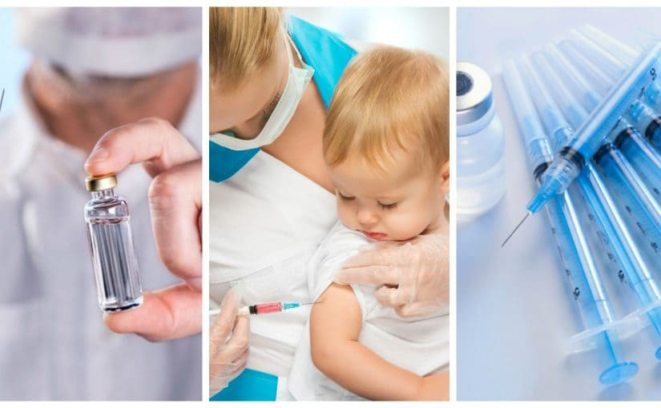

Я работаю педиатром, веду блог о педиатрии, и у меня часто бывают дни, когда вижу горькие последствия невведенных прививок, и мне хочется написать в блоге: «РОДИТЕЛИ, ДЕЛАЙТЕ ПРИВИВКИ ВОВРЕМЯ!», но недавно поймал себя вот на какой мысли.

Написать этот пост меня побудила новость в СМИ о тяжелом пневмококковом менингите у трехмесячного младенца. Это очередной и хрестоматийный пример, когда система дала сбой на этапе профилактики. Этой трагедии легко можно было избежать, если бы своевременно, то есть в 2 месяца жизни, ребенку ввели вакцину Превенар 13. Ничего этого не случилось бы.
Родители продолжали бы жить в блаженном неведении, ругать педиатра за то, что ребенок Превенар плохо перенес (38 температура, капризный и ножка припухала, целых два дня реакция была!)… Но ведь беда всегда случается с кем-то, а не с нами, правда же?
У нас, педиатров, довольно неблагодарная работа: предотвращать. Половина всего, что мы делаем, делается для профилактики: школы беременных, регулярные осмотры здоровых детей, прививки, обучение молодых родителей, профилактика бытового травматизма… Даже своевременное и грамотное лечение болезней – это тоже профилактика (хоть и вторичная), это предотвращение осложнений.
Проблема в том, что хороших результатов нашей работы не видно. Если у нас все удается, то ничего плохого не происходит, и все вокруг воспринимают это как должное.
Вот результат работы реаниматологов куда более очевиден, у хирургов очевиден, у инфекционистов, у комбустиологов… «Доктор, спасите моего ребенка! Я все ради этого отдам!», «Спасибо, спасибо, доктор! Вы нам так помогли, я за вас всю жизнь молиться буду!» (когда хеппи-энд, разумеется). А педиатр – это так, недоврач. Болтает назойливо все время: «Делай то, не делай это». Надоел хуже грыжи. «Не курите в доме, где есть ребенок, – даже в туалете, даже в вытяжку», «Уберите лекарства и бытовую химию под надежный замок», «Вовремя приходите на прививки»… Зануда, одним словом.
Вот именно поэтому мы, педиатры, так настаиваем на своевременной вакцинации. Чтобы не было таких трагедий. Пневмококковый менингит гораздо проще предотвратить, чем лечить.
Пожалуйста, прививайте детей вовремя и в полном объеме.
(Сергей Бутрий "Здоровье ребенка: современный подход")